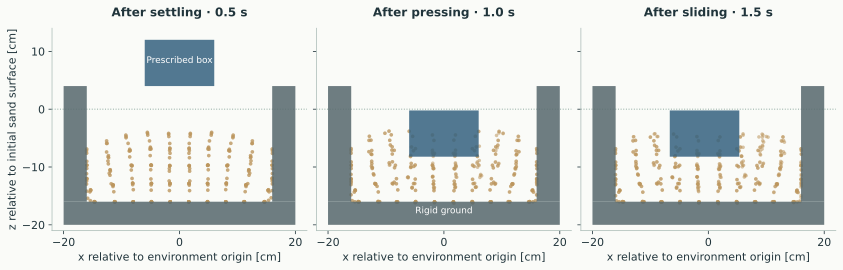
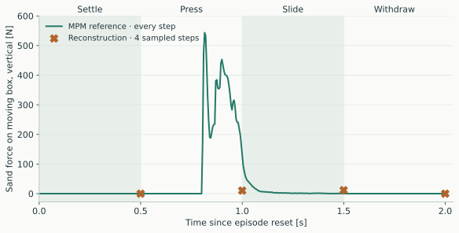
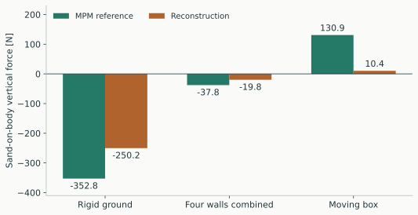
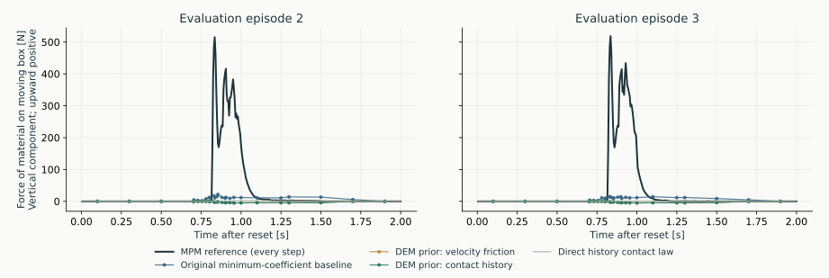
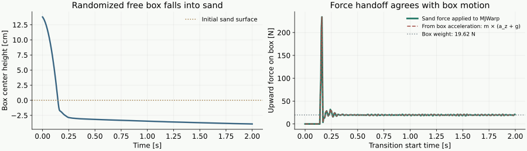
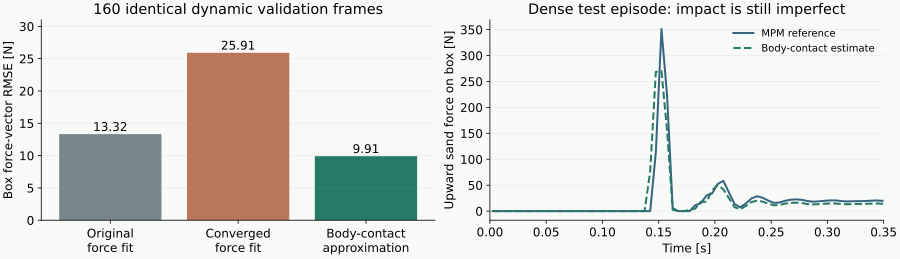
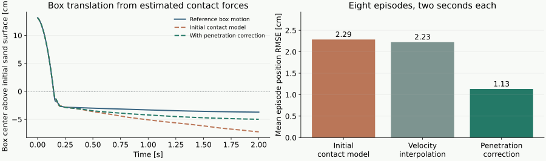
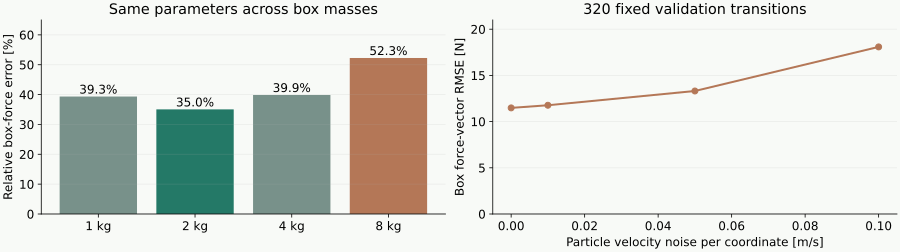
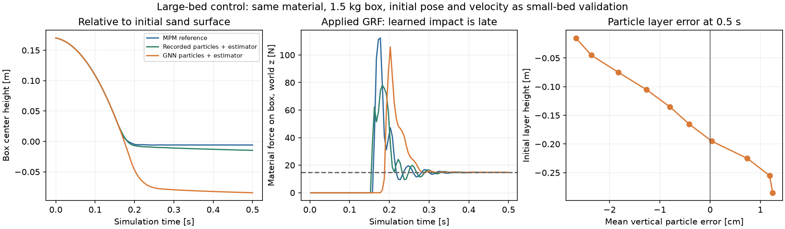
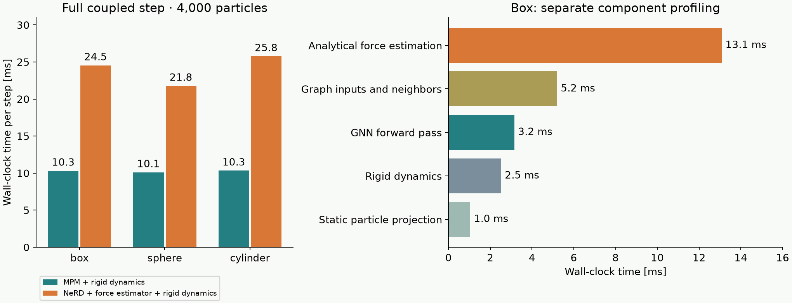

MuJoCo advances the rigid body. MPM advances the sand and supplies contact impulses.
Keep
Rigid-body dynamics, rigid-body contacts, and Newton’s coupling interface.
Replace
The expensive material update with learned motion and analytical reaction reconstruction.
Dynamic collection is being implemented with MJWarp–MPM coupling. Earlier results use a prescribed box; see the progress page.
Particle motion and body reaction must remain consistent.
02 / COLLIDER REPRESENTATION LOCAL CODE
Common geometry; different motion constraints
Newton converts supported shapes into collider meshes and rasterizes contact information onto the MPM grid.
Collider
Geometry and contact properties
Motion
Reaction destination
Rigid ground
Mesh, distance, normal, friction
Fixed
Fixed environment
Prescribed tool
Same representation
Externally supplied
Measured reaction; pose remains prescribed
Dynamic body
Same representation
Rigid-body solver
Rigid-body solver
Implication for NeRD
Use shared collider features. Preserve each collider’s identity, motion, and material properties; separate “ground” and “shovel” networks are not required.
03 / CABLE PRECEDENT SLIDE DECK
The cable model learns motion corrections
01
Collect
Record cable trajectories from VBD under randomized manipulation and contact.
Segment position, orientation, and motion history.
02
Train
Start from a recorded state. Predict corrections to motion under inertia and gravity.
Supervise one-step corrections using the next VBD frame.
03
Infer
Apply predicted corrections, enforce constraints, and advance from the model’s own state.
VBD is absent from the cable inference loop.
baseline motion + learned correction → constraint enforcement → next state
04 / ANALYTICAL COUPLING CABLE SLIDES 23–24
The cable reconstructs forces after predicting motion
Motion historyThree segment poses → accelerations
Known physicsMass, inertia, gravity and rod bending law
Chain solveJoint and contact force / torque balance
Body reactionSum opposite contact forces and torques
What makes it tractable
Fixed chain connectivity creates a block-tridiagonal system. Geometry restricts where external contact forces may act.
What the network supplies
Motion only. The reconstruction uses physical equations and softly enforced rod moments; no force network is required.
Transferable principle
Learn the expensive motion update; reconstruct reactions with known mechanics.
05 / RELATION TO PBD METHOD DISTINCTION
Constraint solving and force reconstruction are related
XPBD
Solve for constrained motion
Correct predicted positions using physical constraints. Constraint multipliers provide force estimates.
Prediction → constraint solve → motion + forces
CABLE NeRD
Reconstruct forces from motion
Use predicted motion, contact geometry, and material laws to solve for consistent reactions.
Learned motion → balance equations → forces
A collision push-out is insufficient
If NeRD already predicts a supported, nonpenetrating state, the final push-out can be zero while the physical support force is nonzero.
06 / GRAPH-BASED TERRAIN MODEL PAPER + RELEASED CODE
L-GBND separates material, tool, and static nodes
Node type in released code
Position update
Role
Terrain / type 0
Current position + learned displacement
Deforming material
Tool / type 1
Current position + prescribed action
Moving contact geometry
Wall / type 2
Unchanged
Static environment
Useful precedent. A graph can represent material–tool interaction with distinct node roles.
Missing for our task. The released position predictor does not return a reaction wrench to a freely moving body.
The paper’s region-boundary normals represent omitted stationary terrain. They do not specify an explicit rigid-ground collision solve.
07 / PROPOSED REPRESENTATION DESIGN
One material model, explicit collider information
PARTICLE STATE
Motion and neighborhood
Positions, velocities, masses, and relative positions and velocities of nearby material samples.
Record APIC velocity gradients; test whether they are needed as model state.
CONTACT INPUTS
Geometry and motion
Distance, surface normal, relative surface velocity, friction, and collider identity.
Include both ground and body features where both are relevant.
MODEL OUTPUT
Particle motion
A learned displacement correction to an explicit gravity-and-velocity baseline.
No learned body-reaction output. No MPM solve at inference.
Update every material particle
Use a small complete sand bed with local graph connections. No region selector; keep material, timestep, and resolution fixed initially.
08 / CENTRAL RESEARCH QUESTION OPEN
What replaces the cable’s chain equations?
mass × particle acceleration = gravity force + internal material force + collider contact forces
Known from motion and geometry
Acceleration, mass, gravity, potential contacts, contact normals, and collider motion.
Unknown
Internal stress transmission and the separate contact reactions on ground and each body.
Candidate reconstruction
Solve local balance on a coarse grid or particle neighborhood graph, constrained by material response and admissible contact forces.
Compression, friction, and material assumptions must be defined. Neighborhood edges are not cable joints.
09 / FIRST EXPERIMENT BEFORE NETWORK TRAINING
Test reconstruction using MPM’s own motion
MPM trajectoriesMotion history + geometry + known material parameters
Analytical reconstructionEstimate body reaction without MPM force labels
Reference comparisonCompare with MPM impulses and body torques
Experiment
What it establishes
Sand at rest on rigid ground
Recovered ground support balances sand weight.
Box supported by sand, clear of rigid ground
Recovered sand force supports the box’s weight.
Box pressing into and sliding through sand
Reconstruction captures changing normal load, friction, and torque.
10 / DATA COLLECTION PLANNED DATASET
Record motion, contacts, and validation references
Generate varied MPM episodes
Settling and static support.
Vertical pressing and release.
Lateral pushing and sliding.
Different starting depths and body orientations.
Use prescribed trajectories for motion-model experiments and dynamic-body episodes for coupling evaluation.
Save each timestep
Particle position, velocity, mass, and APIC gradient.
Body pose, velocity, and contact material parameters.
Material configuration, timestep, and resolution.
MPM body impulses and torques for validation.
Split by episode
Reserve complete motions and initial conditions for validation and testing. Adjacent frames from one episode must not cross dataset splits.
11 / MOTION TRAINING IMPLEMENTATION
Train on MPM transitions; select by rollout accuracy
Recorded state at tParticle state + collider inputs
Newton coupling interfacePer-body force and torque for the next coupled step
←
Analytical reconstructionParticle motion + material model + contact geometry
↑ Apply reconstructed reaction↓ Reconstruct after the particle update
Retain collider identity throughout
Sum each contact reaction onto the correct body. Compute torque about that body’s center of mass; keep fixed-ground reactions separate.
13 / IMPLEMENTATION PLAN RESULTS ON SLIDES 15–18
Implementation milestones
Milestone
Task
Success criteria
1 · Data collection
Record particle motion and body reactions using an MPM iteration cap of 25–50.
Particle and body trajectories remain stable. Support forces balance weight in static tests.
2 · Force reconstruction
First check whether body reactions are uniquely determined. Then reconstruct forces using explicit material and contact relationships.
Estimated reactions agree with MPM and take less time to compute than the MPM update.
3 · Motion prediction
Train a graph neural network to predict particle motion from MPM trajectories.
Predicted trajectories match MPM on test episodes over multiple timesteps.
4 · Coupled simulation
Use NeRD and reconstructed reactions in Newton to simulate particles and moving bodies.
Body motion and sand deformation remain close to MPM without running the MPM solver.
5 · Larger scenes
Increase the number of particles while updating every particle at each timestep.
The complete simulation runs faster than MPM while maintaining the required accuracy.
14 / MILESTONE 1 RESULTS COLLECTION CHECKS PASSED
Reference data collected from parallel MPM simulations
2parallel environments
500particles per environment
4 × 2 srecorded episodes
1,600recorded transitions

Actual recorded positions, projected onto the x–z plane. Front and rear walls are omitted from the illustration.
Verified: recording alignment, episode resets, particle retention, settling, and total linear momentum balance.
15 / MILESTONE 2 METHOD EXPERIMENTAL ASSUMPTION
Estimate body reactions from recorded particle motion
Schematic of the reconstruction assumption; not an MPM force network.
1. Measure acceleration Use the change in each particle’s velocity.
2. Solve particle force balance Allow compressive forces between neighbors and friction-limited contact forces.
3. Sum reactions on each body Apply equal-and-opposite contact forces and their moments about the body center.
Key assumption
A small force penalty selects one solution when motion admits several force distributions. This does not reproduce Newton’s granular material law.
16 / MILESTONE 2 RESULTS SUCCESS CRITERIA NOT MET
The current reconstruction misses the box reaction

One recorded episode. Positive force points upward. Reconstruction markers show only the four evaluated times.
38.5%relative body-force error across 16 sampled frames
79.9 Nmoving-box force RMSE across those 16 frames
7.0 smedian CPU reconstruction time per sampled frame
16 / 16 solves reached the iteration limit. These are provisional estimates.
17 / INTERPRETATION MECHANICS STILL UNRESOLVED
Correct total force can hide incorrect body forces

Episode 0 at 1.0 s: force exerted by sand on each body. Positive is upward; negative is downward.
Total vertical force on all bodies
−259.65 N MPM −259.65 N reconstruction
The totals agree, but the estimated upward force on the moving box is much too small.
Implication: satisfying particle force balance does not validate the force on each body.
Next: check whether the full particle equations uniquely determine body reactions, before choosing a force-selection rule.
18 / EQUATIONS OF MOTION ONE-DIMENSIONAL EXAMPLE
Equations link the rigid body, particles, and ground
Upward is positive. Each contact force appears with opposite signs on the two objects it connects.
B, S₁₂, S₂₃, G: compressive force magnitudes at successive contacts.
Rigid boxmb ab = U + B − Wb
Particle 1m₁ a₁ = S₁₂ − B − W₁
Particle 2m₂ a₂ = S₂₃ − S₁₂ − W₂
Particle 3m₃ a₃ = G − S₂₃ − W₃
Fixed ground0 = R − G − Wg
m = mass; a = vertical acceleration; W = weight (m g). U: external actuator force on the box. R: external support force on the ground. Both are signed upward.
Add all five equations:mb ab + m₁ a₁ + m₂ a₂ + m₃ a₃ = U + R − Σi mi g
Contact forces cancel in the sum. The actuator force U and support force R remain. With known U and measured box acceleration, B follows from the box equation. With prescribed box motion and unknown U, that equation introduces another unknown.
19 / WHY THE FORCES ARE AMBIGUOUS EXACT FORCE-BALANCE EXAMPLE
Different contact forces can produce identical motion
Three stationary particles. Only particle 1 touches the box; only particle 3 touches the ground.
A · Lower compression
Particle 130 − 20 − 10 = 0 N
Particle 240 − 30 − 10 = 0 N
Particle 350 − 40 − 10 = 0 N
B · Add 100 N along the entire chain
Particle 1130 − 120 − 10 = 0 N
Particle 2140 − 130 − 10 = 0 N
Particle 3150 − 140 − 10 = 0 N
Every particle equation is satisfied in both cases. Adding the equations gives ground force − box force = 30 N in either case.
20 / REQUIRED ANALYSIS BEFORE RECONSTRUCTION NOT YET COMPLETED
Check whether the equations determine each body reaction
1. Assemble all balancesBalance each particle’s forces. Internal forces have opposite signs on neighbors. Include contact forces only where contact occurs.
2. Look for force changesCan forces change while every balance remains satisfied and contact constraints remain valid?
3. Check body reactionsIf those changes alter a body’s net force or torque, motion alone has not determined that reaction.
Some ambiguity is acceptable
Internal forces may be nonunique while every body reaction is unchanged. We only need the body reactions to be determined.
Otherwise, identify missing information
Examples: a material force–deformation relationship, material history, or a known applied boundary load. Test whether it resolves the ambiguity.
Correction to the work sequence
This analysis should have preceded the minimum-force implementation. That implementation is an exploratory baseline, not a validated reconstruction method.
21 / CURRENT RECONSTRUCTION IMPLEMENTED BASELINE
The current estimate omits most material properties
Assumption
What the implementation uses
Particle–particle forces
Particles within 6.5 cm transmit equal-and-opposite compressive forces along their connecting line. No separate tangential force.
Particle–body forces
Particles within 4 cm of a body surface are contact candidates. Forces obey a four-sided approximation of the friction cone.
Choice among possible solutions
A quadratic penalty favors small force coefficients. It supplies no force–deformation relationship.
Current objectiveminimize: force-balance error² + 0.0001 × Σ force coefficient²
Parameters used directly
Particle mass and particle–body friction. Density affects the recorded particle mass.
Material properties not used directly
Young’s modulus, Poisson’s ratio, internal material friction, plasticity, and material history.
With identical motion, masses, geometry, and body friction, changing an omitted material parameter does not change the estimate. It can affect the result indirectly by changing the motion.
22 / DISCRETE ELEMENT METHOD SOURCE OF ADDITIONAL EQUATIONS
Relate each contact force to deformation and motion
A simple noncohesive DEM contact law supplies force values from overlap, relative velocity, and contact history.
Illustration of a DEM grain. MPM material points are not physical grains.
Normal force magnitude · active contact
Fn = max(0, kn δ + cn vclose)
Elastic compression + damping; closing speed is positive.
Tangential force vector · before sliding
Ft,trial = −kt ξ − ct vt
ξ accumulates relative tangential displacement during contact.
Sliding limit
‖Ft‖ ≤ μ Fn
Cap the trial force and update history when sliding occurs.
Additional equations: force is related to contact deformation and history, rather than selected only by a small-force preference. Separated particles carry no contact force.
Linear spring–damper contact, velocity-based friction, and short-range cohesion. No tangential history.
Normal force on particle i
Fn = −s n
s = kn c + kd min(vn, 0)
Tangential force magnitude
‖Ft‖ = min(kf ‖vt‖, μ |s|)
Direction opposes tangential relative velocity.
For particle pairs: c = center distance − 2 × radius; n points toward particle i; vn = n · relative velocity.
Cohesion
Positive gaps can produce attraction within a cutoff.
Static friction
Zero tangential speed gives zero friction; no stored tangential displacement.
Geometry
Equal-radius particles and a fixed plane; no arbitrary moving-body contacts.
Proposed reuse: hash-grid neighbors and contact-force evaluation. Add rigid-body surface velocity and reaction accumulation. NeRD supplies motion; do not use the example’s particle integration.
The second term favors forces predicted by the contact law. λ sets its weight relative to motion consistency.
1. Define effective contactsSpecify reference spacing or effective radii, contact stiffness, damping, and friction. Do not equate MPM spacing with grain overlap.
2. Compare contact lawsEvaluate velocity-only friction and a history-based law. Use particle and body velocities; maintain history through each frame.
3. Evaluate body reactionsCompare with MPM reference forces on each body, including densely sampled impact intervals and small position perturbations.
Main modeling question
What effective deformation should determine force? MPM particles sample a continuum; their radius is not automatically a grain radius.
Success criteria
Lower body-force error with small balance residual, stable estimates under position errors, and acceptable reconstruction time.
A penetration-only law gives zero support force at zero overlap and zero relative speed. Reference geometry and contact compliance must therefore be defined and tested.
25 / MEASURED DEM RECONSTRUCTION ACCURACY DID NOT IMPROVE
The DEM prior increased force prediction loss
52 matched frames from two evaluation episodes. Parameters selected on two different episodes. Force MSE averages squared error across frames, six bodies, and three force components.
Method
Force MSE [N²]
Box force RMSE [N]
Particle balance residual
Converged frames
Original baseline
5,290
214.8
0.04%
0 / 52
Zero prior · new basis
6,877
225.2
14.78%
52 / 52
DEM · velocity friction
6,554
223.9
13.86%
52 / 52
DEM · contact history
6,524
224.0
13.92%
52 / 52
Contact history: 23.3% higher force MSE than the original baseline. The prior improves on the zero-prior variant with the same new force basis, but neither DEM variant meets the particle-balance criterion.
Both selected variants: stiffness 100 N/m; prior weight 0.1. No calibration candidate met both convergence and mean balance residual ≤ 5%.
26 / PEAK FORCE AND SENSITIVITY CONTACT MODEL REMAINS INSUFFICIENT
The reconstructed box force still misses the impact load

Material force on the moving box. Markers show evaluated frames; connecting lines interpolate between samples.
515–519 NMPM force at each reference peak
−2.5 NDEM history estimate at those same frames
0.08 / 0.39 NForce change RMSE for 0.1 / 1 mm position offsets
Conclusion: adding this effective contact law did not resolve the missing body loads. Revisit effective contact geometry and material relationships before using the estimate for two-way coupling.
27 / DYNAMIC REFERENCE VALIDATION MJWARP + MPM
The box now moves under gravity and contact
Randomize the 2 kg box’s initial position, orientation, and velocity. Apply no commands after reset. MJWarp advances the box; MPM advances the sand; the coupler exchanges motion and reactions.

Four episodes, 1,600 transitions: mean box force-balance residual 0.000002 N. This validates reference coupling. Reconstructed-force accuracy is evaluated separately.
Blue: rigid-body state. Gold: material particles. Green: material/contact quantities.
Inputs and outputs of one force-estimation step
INPUT · particles
Current positions xᵢⁿ, masses mᵢ, and predicted next velocities v̂ᵢⁿ⁺¹.
INPUT · rigid box
Current center cⁿ, orientation Rⁿ, linear velocity Vⁿ, angular velocity ωⁿ; mass m, inertia I, and box size.
OUTPUT
Material-on-box force F and torque τ; contact-corrected box velocities V⁺, ω⁺ and per-particle impulse −jᵢ.
Also supplied: Δt, gravity g, friction μ, contact offset δ, effective mass scale κ, penetration coefficient β; previous impulses if history is enabled.
This routine estimates contact loads. Particle positions and box pose are held fixed inside it. Newton advances the rigid-body pose separately.
The arrows compare current and free box velocity; they do not show a displacement.
1. Compute the box velocity without contact
Keep the current box pose fixed. Integrate gravity and the rigid body’s gyroscopic term for one timestep.
V* = Vⁿ + Δt g
ω* = ωⁿ − Δt I⁻¹ [ωⁿ × (I ωⁿ)]
I = Rⁿ Ilocal (Rⁿ)ᵀ is inertia about the box center of mass, expressed in world coordinates. * denotes the temporary velocity before contact.
Output: V*, ω*. No particle integration or position update occurs here. For zero initial spin, ω* = 0. Gravity is the only applied load in this example.
Example: Δt = 0.005 s and Vⁿ = 0 give V*z = −0.04905 m/s before contact.
sᵢ lies on the box; rᵢ is measured from the box center of mass. ûᵢ is extrapolated from neighboring particles.
2. Evaluate material velocity at the box surface
For particle i, find its nearest point sᵢ on the current box surface. Fit a local velocity gradient Gᵢ from neighboring particle velocities.
ûᵢ = v̂ᵢⁿ⁺¹ + Gᵢ (sᵢ − xᵢⁿ)
rᵢ = sᵢ − cⁿ · dᵢ = signed distance − δ
Gᵢ is a regularized local affine fit. dᵢ > 0 means separation; dᵢ < 0 means penetration relative to the offset box surface. δ = 0 in the current selected model.
Output per contact: material velocity ûᵢ, lever arm rᵢ, gap dᵢ, and normal nᵢ pointing from material toward the box. Keep particles already touching or able to reach the box during Δt.
The force routine reads v̂ᵢⁿ⁺¹; it does not produce it. Here it comes from recordings; eventually NeRD must supply it.
Contact impulses push the box and material in opposite directions. Effective material mass supplies the additional contact-response assumption.
3. Iterate contact impulses and box velocity
Start at V*, ω*, jᵢ = 0. Iterate contacts: they can push the box, never pull.
uᵢ = ûᵢ − (jᵢ − α jᵢprev) / mᵢeff , mᵢeff = κ mᵢ
wᵢ = nᵢ · (V + ω × rᵢ − uᵢ) + bᵢ
kᵢ = 1/m + (rᵢ × nᵢ)ᵀ I⁻¹ (rᵢ × nᵢ) + 1/mᵢeff
jᵢn ← max(0, jᵢn − wᵢ / kᵢ)
‖jᵢt‖ ≤ μ jᵢn · friction opposes relative sliding
jᵢ is impulse on the box; n and t denote normal and tangential components. bᵢ = [max(dᵢ, 0) + β min(dᵢ, 0)] / Δt allows approach across a gap and corrects penetration.
For each impulse change Δjᵢ: V ← V + Δjᵢ / m and ω ← ω + I⁻¹(rᵢ × Δjᵢ). Stop when impulse changes are small. Output: V⁺, ω⁺ and jᵢ.
α weights the transported previous impulse (0 = no history). uᵢ is an auxiliary velocity; stored particle velocities stay fixed.
Force follows from change in momentum = impulse. The contact equations determine the momentum correction.
4. Convert the momentum correction into force
Sum the contact impulses on the box. Divide by Δt to obtain the force and torque over this interval.
Σᵢ jᵢ = m (V⁺ − V*) ⇒ F = Σᵢ jᵢ / Δt
Σᵢ rᵢ × jᵢ = I (ω⁺ − ω*) ⇒ τ = Σᵢ rᵢ × jᵢ / Δt
Gravity is already included in V*, so F is the material contact force alone. τ is the material contact torque about the box center of mass. I is frozen at the current pose during the solve.
Return: F [N], τ [N m], V⁺ [m/s], ω⁺ [rad/s], and per-particle impulse −jᵢ [N s]. No predicted future box acceleration is required.
Current replay: the rigid-body integrator applies the previously estimated force to match the reference’s one-step coupling delay; it does not directly adopt V⁺ or ω⁺.
Inputs and outputs · select a step to see its equations
1 V* = Vⁿ + Δt g 2 ûᵢ = v̂ᵢⁿ⁺¹ + Gᵢ(sᵢ − xᵢⁿ) 3 Solve unilateral contact + Coulomb friction with effective mass 4 F = Σjᵢ / Δt, τ = Σrᵢ × jᵢ / Δt
Box-force error decreased; impact and support errors remain
On 160 identical dynamic frames, box-force MSE decreased from 59.15 to 32.71 N²: 44.7% lower. The new parameters were selected using different calibration episodes.

Separate dense test: 8 episodes, 3,200 transitions. Force-vector RMSE 10.69 N; relative force error 39.4%. Steady upward force is approximately 12–15 N; the reference is 19.62 N.
30 / DO THE FORCES REPRODUCE BOX MOTION? OFFLINE REPLAY
Contact correction improves box translation
Start from the recorded initial box state. Estimate its contact force at each step, then integrate its motion. Particle motion remains the recorded reference; no MPM solver runs during this replay.

Mean position RMSE: 2.29 → 1.13 cm. Mean orientation RMSE: 9.57 → 8.93°. The revised contact model also lowers force-vector RMSE from 10.69 to 9.85 N on the same 3,200 steps.
31 / COMPLETE PARTICLE FORCE BALANCE NUMERICAL CHECK
Force balance accepts several box reactions
Hold every recorded particle position and acceleration fixed. Change the box load and solve again for internal particle forces and reactions from the rigid ground and walls.
upward support from ground and walls − upward force on box = 256.74 N
Upward particle force on box
Upward ground-and-wall force on particles
Particle-balance residual
0.00 N
256.74 N
0.0067%
13.15 N
269.89 N
0.0074%
26.31 N
283.04 N
0.0082%
Particle balance alone accepts all three. Box dynamics and contact equations must select a physically consistent reaction. The recorded upward box reaction at this step is 19.95 N.
32 / INDEPENDENT DYNAMIC EVALUATION 32 NEW EPISODES
Force accuracy remains sensitive to mass and particle errors
2 kg box: force-vector RMSE 9.41 N; component MSE 29.50 N²; torque-vector RMSE 0.344 N m. 12,800 transitions. The force RMSE’s episode-bootstrap 95% interval is 8.91–9.87 N.

Remaining limitation: the approximation is calibrated on one material and one box geometry. Particle velocity errors directly affect the recovered force; no learned-motion accuracy has been demonstrated.
33 / TRANSLATION, ROTATION, AND CONTACT FORCE 4 NEW MOTIONS
Position RMSE 1.36 cm · Orientation RMSE 5.32° · Force RMSE 7.91 N Both views use recorded MPM particles; box contact forces, torques, and motion differ.
34 / CONTACT IMPULSE HISTORY MEASURED TRADEOFF
Lower mean error; impact peaks remain difficult
Retain the previous estimated contact impulse and update it at every step. Start from zero impulse, and clear the history when contact separates. No measured force initializes this state.
material velocity correction = (new impulse − α × previous impulse) / effective mass
Contact model
Force RMSE [N]
Peak-force RMSE [N]
Box position RMSE [cm]
No impulse history
9.41
40.55
0.72
History + recalibrated parameters
6.66
62.22
0.38
Average accuracy improves, but peak accuracy worsens. The larger overnight study evaluates both objectives instead of selecting a model from mean error alone.
35 / LARGER CALIBRATION STUDY LIVE RESULTS
Mean force error and impact peaks are evaluated separately
Validation: 32 episodes, 400 transitions each. Parameters are selected using separate fitting episodes. Peak error is measured at the time of the reference upward-force peak.
Model
Force RMSE [N]
Peak RMSE [N]
Position RMSE [cm]
Orientation RMSE [°]
No impulse history · lowest peak error
9.32
38.33
0.63
3.71
Initial history model
6.77
60.01
0.27
2.57
Candidate 1 · lowest mean error
6.73
58.35
0.26
2.50
Force estimates use predicted material motion and contact-impulse history. The measurements here use recorded particles; they do not establish a coupled NeRD rollout.
48 training, 6 validation, and 12 reserved test episodes. Box, sphere, and cylinder geometries.
What failed
The initial network lets particles pass through the rigid ground beneath the sand.
Longer one-step training improves local accuracy but worsens drift. Rollout training and explicit static-contact correction are being evaluated.
39 / SAMPLED RIGID GEOMETRY GEOMETRY ABLATION
One signed-distance interface supports different shapes
Query particle position → signed distance φ, outward normal n, and closest surface point.
φ > 0 outside the rigid body · s ≈ x − φ n · n ≈ ∇φ / ‖∇φ‖
Geometry
Analytic force RMSE
Formula → SDF
Mesh → SDF
Mesh-SDF difference
Box
5.19 N
5.16 N
5.16 N
0.18 N RMS
Sphere
6.35 N
6.44 N
6.56 N
0.44 N RMS
Cylinder
5.08 N
5.13 N
5.15 N
0.13 N RMS
Recorded particle and rigid-body states isolate geometry error. Each shape uses 30 sampled validation transitions. Both sampled fields use 5 mm spacing, separate from the 0.02 m MPM grid. The last column compares mesh-SDF forces with analytic forces.
40 / LEARNED PARTICLES + NEWTON COUPLED VALIDATION
Both particle motion and body motion are predicted
Left: dynamic MJWarp–MPM reference. Right: GNN particles, analytical contact forces, and Newton rigid dynamics.
Six validation rollouts: particle error 1.42 cm · body-position error 1.76 cm · force error 5.24 N. Impact remains underestimated in this box episode: peak upward force 98.5 N versus 145.0 N reference.
41 / TRANSFER TO A LARGER BED CONTROLLED DIAGNOSTIC
Particle-model error delays the body impact
Same material, 1.5 kg box, and initial body state. Larger sand bed: 2 × 2 × 0.3 m.

100-step comparison (0.5 s)
Box position RMSE
Force RMSE
Small bed · GNN particles + estimator
0.64 cm
9.53 N
Large bed · recorded particles + estimator
0.49 cm
11.63 N
Large bed · GNN particles + estimator
5.72 cm
24.88 N
42 / EVIDENCE & OPEN QUESTIONS RESEARCH STATUS
The hypothesis is clear; the particle reconstruction is open
Established by the sources
Cable NeRD separates learned motion from analytical reactions.
Newton exposes collider identity and body-reaction coupling.
L-GBND represents terrain–tool interactions with typed nodes.
To establish experimentally
A suitable material law and reconstruction discretization.
The current force estimator limits simulation speed
4,000 particles · 5 ms timestep · RTX 5090 · no rendering or recording.

Matched initial states; one warmup trajectory and three 300-step measured trajectories. MPM: 25-iteration limit. Component profiling is measured separately.